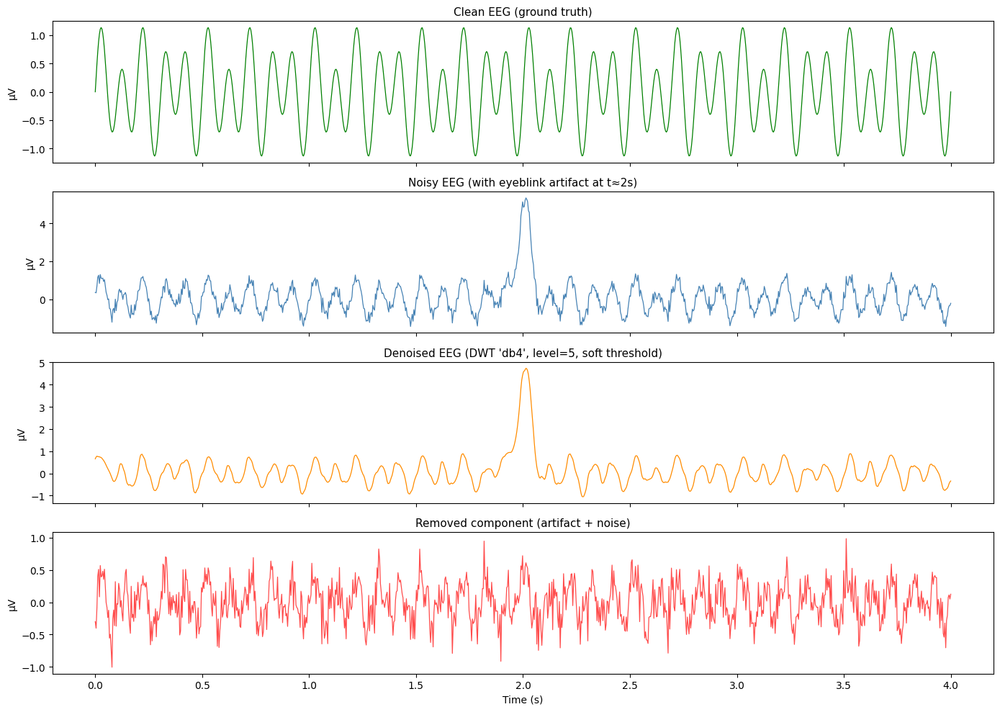
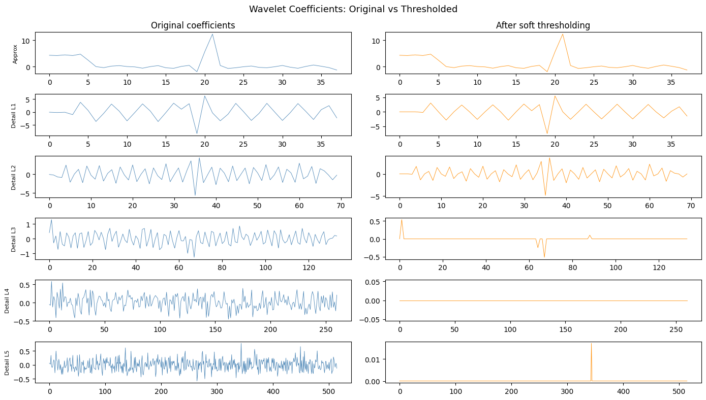
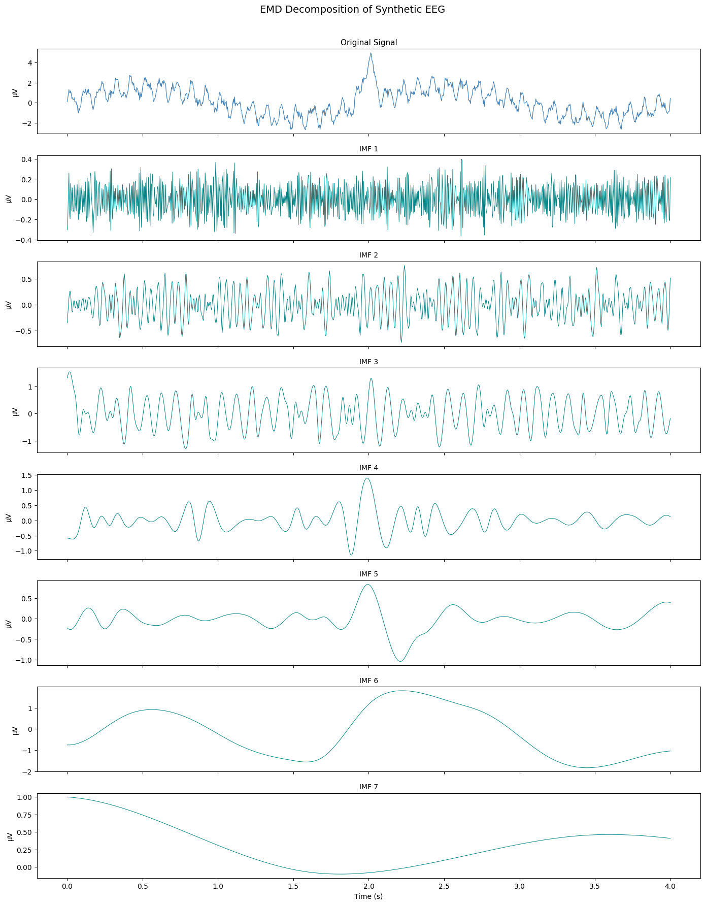
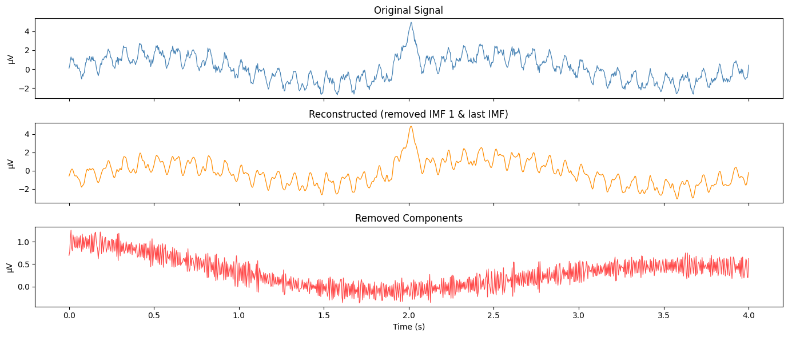
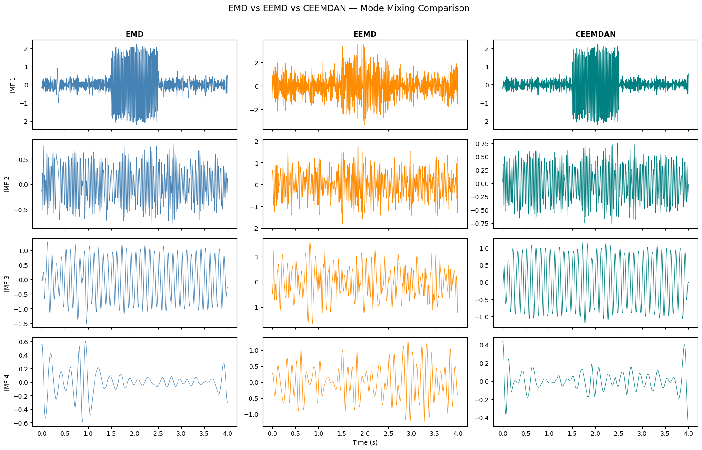

Artifact Rejection#
1. Historical Context of EEG#
1929: Hans Berger recorded the first human electroencephalogram (EEG), discovering the alpha wave.
1960s: The computerization of EEG
2. Introduction to EEG Signals#
What is EEG?#
EEG signals are inherently non-stationary, meaning their statistical properties (like mean and variance) change over time.
Definition: Electroencephalography is the measurement, amplification, and registration of fluctuating electrical fields produced by the brain as a function of time.
The Spatio-Temporal Trade-off#
EEG is characterized by its high temporal resolution (capturing changes in milliseconds) but lacks spatial resolution (difficulty pinpointing the exact cortical source of a signal).
EEG Artifacts#
The primary challenge in EEG analysis is the presence of artifacts—signals not originating from the brain. Common examples include:
Eyeblinks
Eye movements
Muscle movements (EMG)
import numpy as np
import matplotlib.pyplot as plt
from ipywidgets import interact, FloatSlider, IntSlider
# --- Generate Signals ---
np.random.seed(42)
fs = 256 # Sampling frequency
t = np.linspace(0, 4, fs * 4)
# Stationary signal: fixed 10 Hz sine + constant noise
stationary = np.sin(2 * np.pi * 10 * t) + 0.3 * np.random.randn(len(t))
# Non-stationary signal: frequency & amplitude change over time (like real EEG)
non_stationary = (
np.sin(2 * np.pi * 8 * t) * (1 + 0.5 * np.sin(2 * np.pi * 0.5 * t)) # alpha with amplitude modulation
+ np.where((t > 1.5) & (t < 2.5), 3 * np.sin(2 * np.pi * 2 * t), 0) # transient artifact burst
+ 0.3 * np.random.randn(len(t))
)
def plot_signals(window_center=2.0, window_size=80):
"""Slide a window across both signals to inspect local statistics."""
fig, axes = plt.subplots(2, 1, figsize=(12, 6), sharex=False)
start = max(0, int(window_center * fs) - window_size // 2)
end = min(len(t), start + window_size)
for ax, sig, title in zip(axes, [stationary, non_stationary],
["Stationary Signal (10 Hz + noise)",
"Non-Stationary Signal (modulated alpha + artifact burst)"]):
ax.plot(t, sig, color="steelblue", alpha=0.6, linewidth=0.8)
ax.axvspan(t[start], t[end - 1], color="orange", alpha=0.25, label="window")
# Show local mean & std in the window
local_mean = np.mean(sig[start:end])
local_std = np.std(sig[start:end])
ax.axhline(local_mean, color="red", linestyle="--", linewidth=1.2)
ax.set_title(f"{title} | window μ={local_mean:.2f}, σ={local_std:.2f}", fontsize=11)
ax.set_ylabel("Amplitude (μV)")
ax.legend(loc="upper right", fontsize=9)
axes[1].set_xlabel("Time (s)")
plt.tight_layout()
plt.show()
interact(
plot_signals,
window_center=FloatSlider(min=0.2, max=3.8, step=0.1, value=2.0, description="Center (s)"),
window_size=IntSlider(min=30, max=256, step=10, value=80, description="Window size"),
)
<function __main__.plot_signals(window_center=2.0, window_size=80)>
3. Artifact Rejection: Regression & Filtering#
1. Regression-based Methods#
Traditionally, regression and linear filtering-based analyses are employed to reject artifactual noises from corrupted signals.
Mechanism: These methods rely on extra regressive channels (like an EOG channel) to “subtract” noise.
Weakness: A fundamental weakness is that the spectral range of some artifacts overlaps with the spectral range of the actual EEG signal, potentially leading to the loss of real neural data.
4. The Wavelet Transform (WT)#
Transforming a time-domain signal into the time-frequency domain offers major advantages in extracting multiple components of a signal.
The wavelet transform decomposes a time-domain signal into its wavelet coefficients through a mother wavelet function. These coefficients are obtained by performing shifting and dilation of the mother wavelet:
Where:
\(a\): The scaling parameter.
\(b\): The shifting parameter.
Types of Wavelet Transform#
Discrete Wavelet Transform (DWT)
Continuous Wavelet Transform (CWT)
Stationary Wavelet Transform (SWT)
The coefficients are modified by taking advantage of their local properties, and the transformation is then inverted to obtain a clean version of the signal.
Intuition - The Choice of Wavelet: Choice of wavelet matters. Imagine zooming in and out of a signal with differently stretched oscillatory lenses. You want to pick a “lens” (mother wavelet) that most closely mirrors the shape of the feature (e.g., a blink or a spike) you are trying to isolate.
import numpy as np
import matplotlib.pyplot as plt
import pywt
# --- Visualise common mother wavelets used in EEG ---
wavelet_names = ["db4", "sym5", "coif3"]
fig, axes = plt.subplots(1, len(wavelet_names), figsize=(16, 3.5))
for ax, name in zip(axes, wavelet_names):
try:
wav = pywt.ContinuousWavelet(name)
# For continuous wavelets use pywt's wavefun
[psi, x] = wav.wavefun(precision=10)
except Exception:
wav = pywt.Wavelet(name)
[phi, psi, x] = wav.wavefun(level=5)[:3]
ax.plot(x, psi, color="teal", linewidth=1.5)
ax.fill_between(x, psi, alpha=0.15, color="teal")
ax.set_title(name, fontsize=12, fontweight="bold")
ax.axhline(0, color="gray", linewidth=0.5, linestyle="--")
ax.set_xlabel("Time")
ax.set_yticks([])
fig.suptitle("Common Mother Wavelets for EEG Analysis", fontsize=14, y=1.02)
plt.tight_layout()
plt.show()

import numpy as np
import matplotlib.pyplot as plt
import pywt
# --- Create a synthetic EEG-like signal with an eyeblink artifact ---
np.random.seed(0)
fs = 256
t = np.linspace(0, 4, fs * 4)
# Clean EEG: alpha (10 Hz) + beta (20 Hz)
clean_eeg = 0.8 * np.sin(2 * np.pi * 10 * t) + 0.4 * np.sin(2 * np.pi * 6* t)
# Eyeblink artifact: a broad Gaussian bump around t=2s
blink = 5 * np.exp(-((t - 2.0) ** 2) / (2 * 0.03**2))
# Noisy signal
noisy_eeg = clean_eeg + blink + 0.2 * np.random.randn(len(t))
# --- DWT Denoising with soft thresholding ---
wavelet = "db4"
level = 5
coeffs = pywt.wavedec(noisy_eeg, wavelet, level=level)
# Estimate noise std from the finest detail coefficients (MAD estimator)
sigma = np.median(np.abs(coeffs[-1])) / 0.6745
threshold = sigma * np.sqrt(2 * np.log(len(noisy_eeg))) # Universal threshold
# Apply soft thresholding to detail coefficients (keep approximation)
coeffs_thresh = [coeffs[0]] + [pywt.threshold(c, value=threshold, mode="soft") for c in coeffs[1:]]
denoised_eeg = pywt.waverec(coeffs_thresh, wavelet)[:len(t)]
# --- Plot results ---
fig, axes = plt.subplots(4, 1, figsize=(14, 10), sharex=True)
axes[0].plot(t, clean_eeg, color="green", linewidth=0.9)
axes[0].set_title("Clean EEG (ground truth)", fontsize=11)
axes[1].plot(t, noisy_eeg, color="steelblue", linewidth=0.9)
axes[1].set_title("Noisy EEG (with eyeblink artifact at t≈2s)", fontsize=11)
axes[2].plot(t, denoised_eeg, color="darkorange", linewidth=0.9)
axes[2].set_title(f"Denoised EEG (DWT '{wavelet}', level={level}, soft threshold)", fontsize=11)
axes[3].plot(t, noisy_eeg - denoised_eeg, color="red", linewidth=0.9, alpha=0.7)
axes[3].set_title("Removed component (artifact + noise)", fontsize=11)
axes[3].set_xlabel("Time (s)")
for ax in axes:
ax.set_ylabel("μV")
plt.tight_layout()
plt.show()
# --- Show wavelet coefficients before & after thresholding ---
fig2, axes2 = plt.subplots(level + 1, 2, figsize=(14, 8))
fig2.suptitle("Wavelet Coefficients: Original vs Thresholded", fontsize=13)
labels = ["Approx"] + [f"Detail L{i}" for i in range(1, level + 1)]
for i, (orig, thresh, label) in enumerate(zip(coeffs, coeffs_thresh, labels)):
axes2[i, 0].plot(orig, color="steelblue", linewidth=0.6)
axes2[i, 0].set_ylabel(label, fontsize=8)
axes2[i, 1].plot(thresh, color="darkorange", linewidth=0.6)
if i == 0:
axes2[i, 0].set_title("Original coefficients")
axes2[i, 1].set_title("After soft thresholding")
plt.tight_layout()
plt.show()


5. Empirical Mode Decomposition (EMD)#
Unlike Wavelet Transforms which use predefined basis functions, EMD is a data-driven approach. It discovers oscillatory modes directly from the signal itself.
What are IMFs?#
EMD decomposes a signal into Intrinsic Mode Functions (IMFs). Each IMF is:
Locally symmetric
Narrow-band-ish
Oscillatory
The signal is represented as: $\(\text{Signal} = \sum_{i=1}^{n} \text{IMF}_i + \text{residual}\)$
Why use EMD for EEG?#
No Assumptions: It does not assume sinusoids (like Fourier) or wavelets.
Biological Fit: Modes emerge from the signal, making it ideal for neural oscillations which are often messy, non-linear, and non-stationary.
The Major Issue: Mode Mixing#
A common problem in EMD is Mode Mixing, where:
A single IMF contains multiple disparate frequencies.
A single frequency component is split across multiple IMFs. This is especially prevalent in noisy data.
import numpy as np
import matplotlib.pyplot as plt
from PyEMD import EMD
# --- Create a synthetic EEG-like signal ---
np.random.seed(42)
fs = 256
t = np.linspace(0, 4, fs * 4)
# Multi-component signal: alpha + slow drift + artifact
signal = (
0.8 * np.sin(2 * np.pi * 10 * t) # Alpha rhythm
+ 0.4 * np.sin(2 * np.pi * 22 * t) # Beta rhythm
+ 1.5 * np.sin(2 * np.pi * 0.5 * t) # Slow drift / DC artifact
+ 4 * np.exp(-((t - 2.0) ** 2) / (2 * 0.04**2)) # Blink artifact
+ 0.2 * np.random.randn(len(t)) # Noise
)
# --- Run EMD ---
emd = EMD()
imfs = emd.emd(signal, t)
# --- Plot the signal and its IMFs ---
n_imfs = imfs.shape[0]
fig, axes = plt.subplots(n_imfs + 1, 1, figsize=(14, 2.2 * (n_imfs + 1)), sharex=True)
axes[0].plot(t, signal, color="steelblue", linewidth=0.9)
axes[0].set_title("Original Signal", fontsize=11)
axes[0].set_ylabel("μV")
for i in range(n_imfs):
axes[i + 1].plot(t, imfs[i], color="teal", linewidth=0.7)
axes[i + 1].set_title(f"IMF {i + 1}", fontsize=10)
axes[i + 1].set_ylabel("μV")
axes[-1].set_xlabel("Time (s)")
fig.suptitle("EMD Decomposition of Synthetic EEG", fontsize=14, y=1.01)
plt.tight_layout()
plt.show()
# --- Reconstruct without artifact-heavy IMFs ---
# Typically the first IMF captures high-freq noise, and the last captures slow drift
# Remove IMF 1 (noise) and last IMF (drift) as a simple demo
clean_imfs = imfs[1:-1]
reconstructed = np.sum(clean_imfs, axis=0)
fig2, axes2 = plt.subplots(3, 1, figsize=(14, 6), sharex=True)
axes2[0].plot(t, signal, color="steelblue", linewidth=0.9)
axes2[0].set_title("Original Signal")
axes2[1].plot(t, reconstructed, color="darkorange", linewidth=0.9)
axes2[1].set_title("Reconstructed (removed IMF 1 & last IMF)")
axes2[2].plot(t, signal - reconstructed, color="red", linewidth=0.9, alpha=0.7)
axes2[2].set_title("Removed Components")
for ax in axes2:
ax.set_ylabel("μV")
axes2[2].set_xlabel("Time (s)")
plt.tight_layout()
plt.show()


6. Improving EMD: EEMD & CEEMDAN#
To solve the “Mode Mixing” problem, we use ensemble-based approaches that leverage noise to stabilize the decomposition.
A. Ensemble EMD (EEMD)#
Counterintuitively, adding noise improves robustness.
How it works: We add random white noise to the signal many times. For each noisy realization, we run EMD and then average the corresponding IMFs.
Intuition: Noise fills the time-frequency space uniformly, which helps “guide” the decomposition and prevents frequencies from hopping between modes.
The Workflow:
\(x(t) + w_i(t)\) (Add noise)
Run EMD repeatedly to get \(IMF_i^{(k)}\)
\(\bar{IMF}_i\) (Average results)
B. CEEMDAN#
Complete Ensemble EMD with Adaptive Noise (CEEMDAN) is a further refinement. It uses complementary positive and negative noise pairs to reduce reconstruction error and computational cost, providing a more complete and stable decomposition.
import numpy as np
import matplotlib.pyplot as plt
from PyEMD import EMD, EEMD, CEEMDAN
# --- Synthetic signal with mode-mixing-prone components ---
np.random.seed(7)
fs = 256
t = np.linspace(0, 4, fs * 4)
# Intermittent high-freq burst causes mode mixing in plain EMD
signal = (
np.sin(2 * np.pi * 10 * t)
+ 0.5 * np.sin(2 * np.pi * 30 * t)
+ np.where((t > 1.5) & (t < 2.5), 2 * np.sin(2 * np.pi * 60 * t), 0) # intermittent burst
+ 0.3 * np.random.randn(len(t))
)
# --- Run all three methods ---
emd = EMD()
eemd = EEMD(trials=50, noise_width=0.2)
ceemdan = CEEMDAN(trials=50, epsilon=0.2)
imfs_emd = emd.emd(signal, t)
imfs_eemd = eemd.eemd(signal, t)
imfs_ceemdan = ceemdan.ceemdan(signal, t)
# --- Compare first 4 IMFs from each method side-by-side ---
n_show = min(4, imfs_emd.shape[0], imfs_eemd.shape[0], imfs_ceemdan.shape[0])
fig, axes = plt.subplots(n_show, 3, figsize=(16, 2.5 * n_show), sharex=True)
methods = [("EMD", imfs_emd, "steelblue"),
("EEMD", imfs_eemd, "darkorange"),
("CEEMDAN", imfs_ceemdan, "teal")]
for col, (name, imfs, color) in enumerate(methods):
for row in range(n_show):
axes[row, col].plot(t, imfs[row], color=color, linewidth=0.7)
if row == 0:
axes[row, col].set_title(name, fontsize=12, fontweight="bold")
axes[row, 0].set_ylabel(f"IMF {row + 1}", fontsize=10)
axes[-1, 1].set_xlabel("Time (s)")
fig.suptitle("EMD vs EEMD vs CEEMDAN — Mode Mixing Comparison", fontsize=14, y=1.01)
plt.tight_layout()
plt.show()
# --- Reconstruction error comparison ---
def reconstruction_error(signal, imfs):
return np.mean((signal - np.sum(imfs, axis=0))**2)
print("Reconstruction MSE:")
print(f" EMD: {reconstruction_error(signal, imfs_emd):.6f}")
print(f" EEMD: {reconstruction_error(signal, imfs_eemd):.6f}")
print(f" CEEMDAN: {reconstruction_error(signal, imfs_ceemdan):.6f}")

Reconstruction MSE:
EMD: 0.000000
EEMD: 0.930218
CEEMDAN: 0.000000
7. Evaluation and Choice of Parameters#
These methods (WT, EMD, ICA) are often paired and then evaluated using Entropy Thresholds to determine which components are noise and which are signal.
Bottom Line: Whether using Wavelets or the EMD family (EEMD, CEEMDAN), these techniques can all be cross-paired with ICA to create a robust, multi-stage cleaning pipeline for EEG.